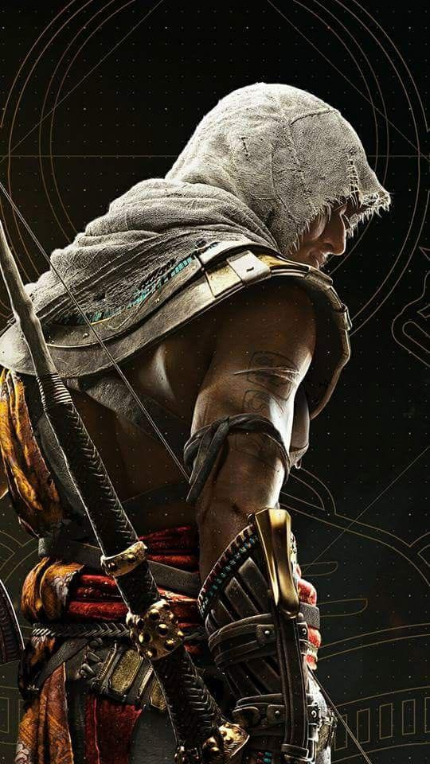

Altaïr Ibn-La'Ahad

Altaïr Ibn-La'Ahad (Assassin's Creed): Nacido en Tierra Santa durante la Tercera Cruzada, Altaïr es el ancestro de Desmond Miles y el primer Maestro Asesino que aparece en la saga. Es un personaje complejo, cuyo viaje lo lleva a cuestionar los principios de la Orden de los Asesinos.
Ezio Auditore da Firenze

Ezio Auditore da Firenze (Assassin's Creed II, Brotherhood, Revelations): Miembro de una noble familia florentina, Ezio se convierte en asesino tras la ejecución de su padre y hermanos a manos de los Templarios. Su viaje lo lleva a través del Renacimiento italiano, donde debe reconstruir la Hermandad de los Asesinos
Connor Kenway

Connor Kenway (Assassin's Creed III): Un nativo americano de ascendencia británica y mohawk, Connor se une a la causa de los Asesinos durante la Revolución Americana, luchando contra los Templarios que intentan aprovecharse del conflicto.
Edward Kenway

Edward Kenway (Assassin's Creed IV: Black Flag): Pirata galés que se ve envuelto en la lucha entre Asesinos y Templarios mientras surca los mares del Caribe durante la Edad de Oro de la piratería. .
Bayek
Bayek (Assassin's Creed Origins): Antiguo Medjay de Egipto, Bayek es el fundador de la Hermandad de los Asesinos, cuya historia se cuenta en esta entrega ambientada en la época de Cleopatra.